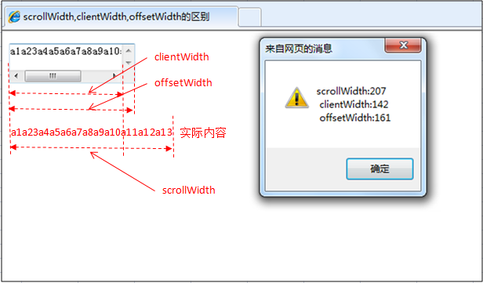

contents

clientWidth是对象看到的宽度（不含边线,即border）
scrollWidth是对象实际内容的宽度（若无padding，那就是边框之间距离，如有padding，就是左padding和右padding之间距离）。
offsetWidth是指对象自身的宽度，整型，单位像素（含边线，如滚动条的占用的宽，值会随着内容的输入而不断改变）。
scrollHeight: 获取对象的滚动高度。
scrollLeft:设置或获取位于对象左边界和窗口中目前可见内容的最左端之间的距离
scrollTop:设置或获取位于对象最顶端和窗口中可见内容的最顶端之间的距离
scrollWidth:获取对象的滚动宽度
offsetHeight:获取对象相对于版面或由父坐标 offsetParent 属性指定的父坐标的高度
offsetLeft:获取对象相对于版面或由 offsetParent 属性指定的父坐标的计算左侧位置
offsetTop:获取对象相对于版面或由 offsetTop 属性指定的父坐标的计算顶端位置
易混淆点：
clientX 设置或获取鼠标指针位置相对于当前窗口的 x 坐标，其中客户区域不包括窗口自身的控件和滚动条。
clientY 设置或获取鼠标指针位置相对于当前窗口的 y 坐标，其中客户区域不包括窗口自身的控件和滚动条。
offsetX 设置或获取鼠标指针位置相对于触发事件的对象的 x 坐标。
offsetY 设置或获取鼠标指针位置相对于触发事件的对象的 y 坐标。
screenX 设置或获取获取鼠标指针位置相对于用户屏幕的 x 坐标。
screenY 设置或获取鼠标指针位置相对于用户屏幕的 y 坐标。
x 设置或获取鼠标指针位置相对于父文档的 x 像素坐标(亦即相对于当前窗口)。
y 设置或获取鼠标指针位置相对于父文档的 y 像素坐标(亦即相对于当前窗口)。
document.documentElement.scrollTop 垂直方向滚动的值
event.clientX+document.documentElement.scrollTop 相对文档的水平座标+垂直方向滚动的量
以上主要指IE之中，FireFox差异如下：
IE6.0、FF1.06+：
clientWidth = width + padding
clientHeight = height + padding
offsetWidth = width + padding + border
offsetHeight = height + padding + border
IE5.0/5.5：
clientWidth = width - border
clientHeight = height - border
offsetWidth = width
offsetHeight = height(需要提一下：CSS中的margin属性，与clientWidth、offsetWidth、clientHeight、offsetHeight均无关)
网页可见区域宽： document.body.clientWidth;
网页可见区域高： document.body.clientHeight;
网页可见区域宽： document.body.offsetWidth (包括边线的宽);
网页可见区域高： document.body.offsetHeight (包括边线的宽);
网页正文全文宽： document.body.scrollWidth;
网页正文全文高： document.body.scrollHeight;
网页被卷去的高： document.body.scrollTop;
网页被卷去的左： document.body.scrollLeft;
网页正文部分上： window.screenTop;
网页正文部分左： window.screenLeft;
屏幕分辨率的高： window.screen.height;
屏幕分辨率的宽： window.screen.width;
屏幕可用工作区高度： window.screen.availHeight;
屏幕可用工作区宽度：window.screen.availWidth;